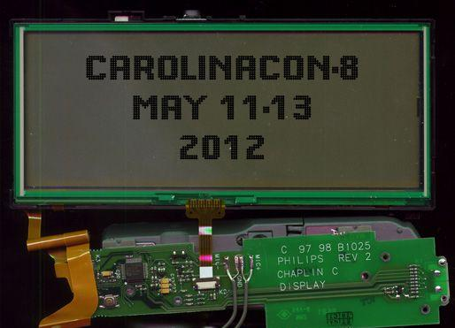
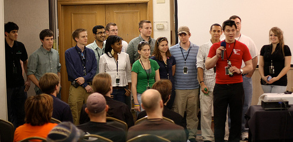

CarolinaCon8
presented by North Carolina 2600
May 11-13, 2012, Raleigh
CarolinaCon 8 Put to Bed
CarolinaCon 8 was an astounding success! It was bigger and better than any previous year. If you missed it, you missed out. This weekend's stories will never be re-told. But don't worry. CarolinaCon 9 will be like any random Apple gadget: The *best* thing we've ever ever done.
CarolinaCon 8 is coming!
CarolinaCon 8 will be held May 11th 2012 - May 13th 2012 at the Hilton North Raleigh/Midtown
About CarolinaCon8
CarolinaCon is an annual conference in North Carolina that is dedicated to sharing knowledge about technology, security and information rights. CarolinaCon also serves to enhance the local and international awareness of current technology related issues and developments. CarolinaCon also strives to mix in enough entertainment and side contests/challenges to make for a truly fun event.
CarolinaCon was started in 2005 and has been held every year since. With each passing year the conference continues to grow and attract more attendees and speakers. As has always been the case, CarolinaCon is put together and run by an all-volunteer staff. CarolinaCon is proudly brought to you by "The CarolinaCon Group". The CarolinaCon Group is a non-profit organization registered in the state of NC, dedicated to educating the local and global communities about technology, information/network/computer security, and information rights.
The CarolinaCon Group is also closely associated with various 2600 chapters across NC, SC, TN, VA, LA, DC, GA, PA and NY. Many of the volunteers who help develop and deliver CarolinaCon come from those chapters.
Con websites from years past:
Con Shirts from years past:

{kind=link}
{kind=link}
{kind=link}
{kind=link}
{kind=link}
Location
CarolinaCon 8 will be held at a new location this year.
Hilton North Raleigh/Midtown 3415 Wake Forest Road Raleigh, North Carolina USA 27609-7330 Tel: +1-919-872-2323
NOTE: We have a reduced rate hotel reservation. The block of reduced-rate rooms is limited, so register early or you might miss out.
Map
Schedule
NOTE: Abstracts and bios further below. Enjoy!
Friday
5:00pm - Registration opens - CarolinaCon begins
6:30pm - Opening Announcements - Con rules, CTF rules, Crypto Challenge rules, Breakout Room events
7:00pm - Identifying Cyber Warriors - Prof. Tom Holt / Professor Farnsworth
8:00pm - Bypassing Android Permissions - Georgia Weidman
9:00pm - Intro to Hacking Bluetooth - ronin
10:00pm - Trivia (preliminary round)
11:00pm - End of Friday proceedings - After-hours fun begins
Saturday
9:00am - Registration opens9:45am - Daily Announcements - Con rules, Breakout Room events
10:00am - DevHack: Pre-Product Exploitation - Snide
11:00am - Malware Retooled - Big-O
[lunch: noon-1pm]
1:00pm - Inside Jobs: Stealing Sensitive Data and Intellectual Property - Vic Vandal, with special guest emwav
2:00pm - Project Byzantium: Improvisable Ad-Hoc Wireless Mesh Networking for Disaster Zones - Sitwon The Pirate and The Doctor
3:00pm - Hacking as an Act of War - G. Mark Hardy
4:00pm - Big Bang Theory: The Evolution of Pentesting High Security Environments - Joe McCray
[dinner: 5pm-7pm]
7:00pm - Spyometrics: New World of Biometric Surveillance - Dr. Noah Schiffman, aka Lo-Res
8:00pm - Dr. Tran goes to Switzerland - Dr. Tran
9:00pm - Hacker Trivia - Vic Vandal, wxs, emwav, Gem
10:00pm - End of Saturday proceedings - After-hours fun begins
Sunday
9:30am - Registration opens9:45am - Daily Announcements - Unofficial Shootout winners
10:00am - Attacking CAPTCHAs - Gursev Singh Kalra
11:00am - Patch to Pwned: Exploiting Firmware Patching to Compromise MFP Devices - Deral Heiland
[lunch: noon-1pm]
1:00pm - Hacking your Mind and Emotions - Branson Matheson
2:00pm - It's 2012 and My Network Got Hacked - Omar Santos
3:00pm - Declarative Web Security: DEP for the Web - Steve Pinkham
4:00pm - Raspberry Pi's Impact on Hacking - DJ Palombo
4:30pm - Closing Announcements - CTF winner(s), Crypto Challenge winner(s)
5:00pm - CarolinaCon ends - Recuperation begins
Abstracts and Bios
Identifying Cyberwarriors: Predicting Civilian Participation in On-line Conflict
There has been a substantial increase in reports of civilian attacks against all manner of government and private industry targets on and off-line. The globalization of the Internet and increasing civil unrest across the world indicates that individuals are beginning to recognize the value of cyberattacks as a response to governmental practices and regulations. In fact, the availability of malware and mass movements like Anonymous enable unskilled actors to engage in attacks against various targets, including critical infrastructure, to force social change. As a consequence, the rise of the "civilian cyberwarrior" as adopted by Dorothy Denning and Max Kilger may cause shifts in the power relationship between individuals and nation states. This presentation will utilize samples of college students from the US and Taiwan to examine the predictors of individual willingness to engage in attacks against their own nation and other countries on and off-line. The findings will examine prospective behavioral and attitudinal factors that affect the likelihood that individuals will engage in attacks, and consider regional differences that may affect action. This talk will benefit the intelligence community and security researchers by predicting and modeling the dynamics of threats to national security and private data and respond when they occur.
Thomas J. Holt is an Associate Professor in the School of Criminal Justice at Michigan State University. He received his Ph. D. in Criminology and Criminal Justice from the University of Missouri-Saint Louis in 2005. His research focuses on computer hacking, malware, and the role that technology and computer mediated communications play in facilitating all manner of crime and deviance. Dr. Holt has been published in numerous academic journals, including Crime and Delinquency, Deviant Behavior, and the Journal of Criminal Justice, is a co-author of the book Digital Crime and Digital Terror, editor of the text Cybercrime: Causes, Correlates, and Context, and co-editor of the forthcoming book Corporate Hacking and Technology-Driven Crime. He is also a regular presenter at Defcon, the Department of Defense Cybercrime Conference, and various regional hacker conferences. Dr. Holt is also the recipient of two grants from the U.S. National Institute of Justice to examine the market for malicious software and the social dynamics of carders and data thieves in on-line markets. Additionally, Dr. Holt is the project lead for the Spartan Devils Chapter of the Honeynet Project, and directs the MSU Open Source Research Laboratory dedicated to exploring the landscape of cyberthreats around the globe through on-line research.
Bypassing Android Permissions
When giving a security talk on the Android platform, one of the most common questions is can the permissions model be bypassed? Can an Android app, short of exploiting the phone and gaining root privileges gain additional permissions? In this talk we will look at multiple ways to bypass the permission model including: bypassing through application updates, bypassing through using multiple apps, taking advantage of insecure storage practices in other installed apps, and piggybacking on other apps with insecurely implemented interfaces. Demos, code snippets and examples of apps from the Android Market with these problems will be shown. We will then discuss resources Android has in place to combat these problems and what developers and users can do to mitigate these risks.
Georgia is a penetration tester and independent security researcher. She is working as a security consultant at Neohapsis Inc. She holds a M.S. in Secure Software and Information Security, a CISSP, and Offensive Security Certified Professional (OSCP) certification. She got her start in security as a team captain in the Collegiate Cyber Defense Competition, and now she serve as an attacker in the Mid-Atlantic region. Since making her speaking debut at Shmoocon she has spoken at conferences such as Hacker Halted, Security Zone, and Bsides. She run GRM n00bs (http://www.grmn00bs.com) a website dedicated to videos, tutorials, and podcasts for information security beginners.
Abstract: Many times security professionals, network engineers, and management ask "why did I spend all this money in network security equipment if I still got hacked?" For example, often questions like
these run through their minds: "Am I not buying the right security products? Am I not configuring or deploying them correctly? Do I have the right staff to run my network?" The security lifecycle requires measuring the current network state, creating a baseline and providing constant improvements. This presentation will cover several real-life case studies on how different network segments were compromised despite that state-of-the-art network security technologies and products were deployed. We will go over several security metrics that you should understand in order to better protect your network.
Omar Santos is an Incident Manager at Cisco's Product Security Incident Response Team (PSIRT). Omar has designed, implemented, and supported numerous secure networks for Fortune 500 companies and the U.S. government. Omar has delivered numerous technical presentations on several venues; as well as executive presentations to CEOs, CIOs, and CSOs of many organizations. He is also the author of 4 Cisco Press books and two more in the works.
DevHack; Pre-Product Exploitation
When it comes to penetration testing, developers are sometimes smarter than your average user and can be overlooked. Generally they hold elevated privileges and have access to more resources, making them an attractive target. In this presentation, we'll explore methods to exploit developers and products under development by targeting dependency management repositories.
I've been working on a project that is intended to be able to exploit developers or products under development by hijacking a repository, and serving up a modified (currently static, working on real-time) version of the dependency that was requested. End result is a product/box that is already compromised before release.
Malware Retooled: Moving away from purpose built platforms (Zeus, SpyEye,Bugat) to general tools (Sunspot) to target specific industries
There has been a recent surge in the release of malware source code, which involves crimepack authors from different locations working together to refine their products. Crimeware authors are leveraging the release of source to further develop their already sophisticated and well developed threats as well as add modularity and functionality to their software. In addition the release of Zeus and TDL3 source adds to the wealth of information already available further lowering the entry barrier for developers and price point for would be criminals looking to enter the malware market space. Zeus, SpyEye, (and others like them) are tools that are built specifically to target the financial industry, whereas Sunspot is a general purpose tool that modifies specifically to target banks. This is significant because tools and techniques that are built to detect the former do not work with the latter.
Tracking these trends can be accomplished by leveraging classification and clustering models that are built on Behavioral analysis tools. This paper demonstrated a technique that allows the analyst and end user to easily compares changes and feature enhancements through the development cycle of a particular malware family.
Inside Jobs: Stealing Sensitive Data and Intellectual Property
This talk discusses the dirty world of insider data theft, touching on the areas of;
- the psychology of those who attempt it and why they do it
- how data theft is generally accomplished
- quick review of a few real-world data breach incidents
- percentage of organizations that have robust controls against information theft
- strengths and weaknesses of leading-edge prevention technologies (how data thieves get caught and/or how they get away with it)
- what major improvements must be made in prevention technologies before any organization can honestly say that they are protected
Vic has been employed as an "InfoSec Samurai" for the past 22 years. He was originally "drafted" (kicking and screaming) into the InfoSec discipline to develop proprietary mainframe security software for a specific government agency, and the rest is history. Over the years he has helped protect sensitive information that belonged to the CIA, DEA, Secret Service, Treasury Dept, Commerce Dept, and every other federal agency in existence. He later provided the same services for the U.S. Department of Defense, Navy, Marine Corps, and Army. He left government work eventually (with no regrets) and has worked within the private financial sector for the past 7 years.
emwav has been a system and network administrator for the past dozen years. He has also been an integral part of the CarolinaCon staff the past several years. In his spare time he is a beer brewing enthusiast and can be found giving tours at Big Boss.
Project Byzantium: An improvisable, ad-hoc wireless mesh network for the zombie apocalypse
The goal of Project Byzantium is to develop a communication system with which users can connect to each other and share information in the absence of convenient access to the Internet. The use cases for such a system include situations in which the infrastructure for accessing the internet has become damaged or inaccessible. (e.g., a natural disaster such as Hurricane Katrina.); a central authority has decided to explicitly block or shutdown key infrastructure. (e.g., Egypt's recent internet blackout, DPI-facilitated censorship in Syria and Iran, and rampant DNS filtering.); a zombie apocalypse in which personnel responsible for maintaining key portions of the infrastructure have all been turned.
Programmer, Hacker, and Pirate extrodinare. Sitwon is a Linux administrator and developer at a small software company. He previously worked for a number of startups where he developed Live Linux distributions and custom firmware for embedded Linux routers. He is a member at HacDC, where he shares his passion for Computer Science by teaching everything from logic gates to operating systems. He is also one of the core developers of Byzantium Linux.
The Doctor is a former penetration tester, system architect, and system administrator working for a prestigious aerospace engineering company in Washington, DC. When not building or repairing servers he's scratching his head over interesting problems with embedded systems designed for inhospitable environments, aiding protestors in the Middle East as an agent of Telecomix, working on projects at HacDC, or consulting in the private sector. He has been a guest speaker at George Mason University and the University of Maryland, where he's lectured on the topics of wireless security and hackerspaces. In his copious spare time he teaches the odd class on operational security for activists, is active in the transhumanist community and is involved in several projects with the Zero State. He is one of the core developers of Byzantium Linux.
Hacking as an Act of War
Once the exclusive domain of super-smart techhies, hacking has gone "mainstream" as an element of national defense. At what point does hacking (read, "computer network attack") rise to the level of warfare? Could United Nations Article V be invoked to engage collective self-defense against an attacker? What role could we play as smarter-than-average cyber-citizens? We'll examine some of the skirmishes that have set the stage for all-out cyberwarfare, and explore reasons why we haven't yet fought the "big one."
G. Mark Hardy serves as President of National Security Corporation. He has been providing cyber security expertise to government, military, and commercial clients for over 30 years, and is the author of over 100 articles and presentations. He serves on the National Science Foundation's CyberWATCH Advisory Board, and is a retired Navy Captain. A graduate of Northwestern University and the Army War College, he holds a BS in Computer Science, a BA in Mathematics, a Masters in Business Administration, a Masters in Strategic Studies, and is designated as a Certified Information Systems Security Professional (CISSP) and Certified Information Security Manager (CISM).
Big Bang Theory: The Evolution of Pentesting High Security Environments
This presentation focuses on pentesting high security environments, new ways of identifying/bypassing common security mechanisms, owning the domain, staying persistent, and ex-filtrating critical data from the network without being detected. The term Advanced Persistent Threat (APT) has caused quite a stir in the IT Security field, but few pentesters actually utilize APT techniques and tactics in their pentests. This presentation picks up where Joe left off in last year's presentation "You Spent All That Money And You Still Got Owned" and takes it to the next level. Joe will also be releasing a new tool as well.
Joe McCray is an Air Force Veteran and has been in security for over 10 years. Joe has been involved in over 150 high level penetration testing engagements and has some major hacking accomplishments that he can share with his students and clients. His extensive experience and deep knowledge, mixed with his comedic style has lead Joe to be one of the most highly sought after speaking experts in the industry. Joe makes speaking appearances and gives seminars at major events in the security community such as Black Hat, DefCon, BruCon, Hacker Halted and more. Joe is the recipient of the 2009 EC-Council Instructor Circle of Excellence Award and the 2010 EC-Council Instructor of the Year Award. Joe is the founder and CEO of http://strategicsec.com an IT Security consulting firm that provides in-depth technical security assessments of your network, web application, and regulatory compliance gap analysis.
Spyometrics: The New World of Biometric Surveillance
The convergence of social networking, location based services, and biometric security, seek to enhance the digital usability of our environment. Biometric authentication creates a new layer of critical and irrevocable personally identifiable information (PII). Developments in image acquisition techniques and advances in sensors make it possible to remotely capture and collect human traits-- a means of biometric surveillance. The constant acquisition, aggregation, and multi-modal fusion of personal data create numerous vulnerabilities to personal privacy. When combined with dataveillance, threats against re-identification, inferential linkage analysis, and deductive disclosure have become more consequential. A rising number of organizations are faced with adopting Privacy Enhancing Technologies (PET) for securely managing biometric information. However, in the absence of biometric compliance standards, the end use of this personal information is a growing privacy concern. This presentation will address current biometric systems, new methods of non-cooperative biometric data acquisition, and the subsequent vulnerabilities posed to our personal privacy. In addition, it will discuss some of the steps individuals can take to protect their anonymity in a digitally panoptic world.
With 20+ years of industry experience, Noah Schiffman is a former hacker turned security consultant, specializing in pen-testing, threat assessment, and security integration. With degrees in cognitive psychology and mechanical engineering, he has worked on designing authentication/access control systems and improving security usability. After receiving a doctorate in medicine, his research and development have encompassed biometric technologies and medical device security. He has spoken at security conferences, such as ToorCon, InfoSeCon, and SOURCE Boston, and has been a frequent contributing writer for Network World and SearchSecurity.com. Currently, he is the CSO for a defense contractor in SC and an independent security consultant, although plans on returning to school to collect more useless degrees.
Dr. Tran Goes to Switzerland: A Hacker's Adventure Through the Land of Perforated Cheese
After some shenanigans at work, Dr. Tran's company decided to kick him out of the US of A. His next super secret adventure has taken him to Zurich Switzerland. Switzerland is a fascinating land of perforated cheese, high security locks, trains, nerds, firearms, and quirky rules. Dr. Tran chronicles his relocation and fun. You will learn the weirdness of Switzerland and why it is a fun place for geeks and hackers alike.
Attacking CAPTCHAs for Fun and Profit
CAPTCHAs are a potent mechanism to prevent web applications against the ravaging bots and appear to be omnipresent across the World Wide Web. To analyze the strength of CAPTHA deployments on the internet, a research spanning hundreds of high traffic websites and several CAPTCHA service providers was conducted. The research looked at CAPTCHA image design, CAPTCHA implementation and Verification mechanisms. During the research, several interesting implementation flaws and attacks were identified that will be discussed during the presentation. Some of these flaws/attacks include CAPTCHA fixation, CAPTCHA Rainbow Tables, In-Session CAPTCHA Bruteforcing, OCR Assisted CAPTCHA Bruteforcing, Chosen CAPTCHA Text Attack, CAPTCHA Accumulation etc… It was also observed that an alarming number of visual CAPTCHAs (image designs) could be broken by combination of good image preprocessing and Optical Character Recognition (OCR) engines. TesserCap was thus written to test CAPTHA designs based upon these observations. TesserCap is a GUI based, highly flexible and first of its kind CAPTCHA analysis tool. TesserCap retrieves CAPTCHAs from the target website and solves those locally. Each CAPTCHA is subjected to TesserCap's stage image preprocessing module and the OCR engine. The image preprocessing algorithms work around color complexities, spatial irregularities, and other types of random noise that developers introduce into the CAPTCHAs to achieve higher detection rates.
Gursev Singh Kalra serves as a Managing Consultant at Foundstone, McAfee. Gursev was a speaker at security conferences like ToorCon, NullCon and ClubHack. Gursev has authored a CAPTCHA testing tool TesserCap and an open source SSL cipher enumeration tool SSLSmart. Gursev has also developed several internal tools, web applications and loves to code in Ruby, Ruby on Rails and C#.
From Patch to Pwnd: Exploiting faulty firmware patch features to compromise MFP Devices
An in depth examination of the patch/upgrade process on Xerox Multifunction devices, for the purpose of exploitation. By taking advantage of faulty patch/upgrade design we will show how an attacker can gain root level access privileges on MFP devices. We will start our discussion by examining historical research, and methods used in the past to compromise MFP devices in relationship to our attack method. Following from there we will discuss the steps I took during my research. This will include the evaluation of patch and firmware packages built using Xerox Downloadable modules (DLM) format. Examining Xerox patch process, including how they are obtained and deployed. We will Also discuss the structure and extraction of data from DLMs. Leveraging this information we will demonstrate how an attacker could easily create their own rogue DLMs and deploy them to take aver a Xerox MFP device with root level privileges without needing to authenticate. In conclusion we will discuss methods that could be used to reduce or mitigate the risk caused by these issues.
Deral Heiland CISSP, serves as a Senior Security Engineer where he is responsible for security assessments, and consulting for corporations and government agencies. In addition, Deral is the founder of Ohio Information Security Forum a not for profit organization that focuses on information security training and education. Deral Is also a member of the foofus.net security team. Deral has presented at numerous conferences including ShmooCon, Defcon, CarolinaCon, Securitybyte India, University of Wisconsin lockdown conference and has also been a guest lecturer at the Airforce Institute of Technology (AFIT). Deral has over 18 years of experience in the Information Technology field, and has held multiple positions including: Senior Network Analyst, Network Administrator, Database Manager, Financial Systems Manager and Senior Information Security Analyst where he was responsible for delivering security guidance and leadership in the area of risk and vulnerability management for a global Fortune 500 manufacturer.
Hacking your mind and emotions
Most admins will agree that users tend to be the weakest link in the maintenance of security in an environment. People are easily manipulated by their very nature. Social Engineering techniques are used on us every day, and I will demonstrate how you can turn the tables and use those same ideas to exploit human weakness and gain access. I will discuss and demonstrate some basic psychology, social engineering theory and actual implementation at several levels: Remote interaction, Indirect manipulation, and Mano-a-Mano engineering. I will also discuss some defense against these attacks through the use of effective policies and awareness training.
Baby Teeth: An Introduction to Hacking Bluetooth
The talk will cram as much as possible about practical Bluetooth hacking into 50 min. Starting with an overview of the technology and how to operate in a Linux environment. Then onto obfuscation and surveillance. Tricks like spoofing Device Name and MAC Address for Bluetooth and port scanning. Then some practical attacks: dumping phone books, getting user names, sniffing traffic, cracking PINs, uploading files. I will demonstrate several tools I have written and some new tools I have yet to release.
JP ".ronin" Dunning is a security consultant and researcher. His research interests include wireless and portable security, and he is the primary developer of Katana: Portable Multi-Boot Security Suite. He maintains www.hackfromacave.com for publishing projects and research.
Declarative Web Security: DEP for the web
Right now web security requires writing perfect software. Let's face it; We just aren't ever going to get that done. Using declarative tools like Content Security Policy, Strict Transport Security and other TLAs, we can give ourselves a fighting chance to get things right, and even an optional system to alert us when things go wrong.
Steve Pinkham is a Security Consultant for Maven Security Consulting, and the current leader of the Raleigh OWASP chapter. His current focus is web and mobile security, though he likes breaking anything he can get his hands on. He runs the Web Security Dojo project, and has submitted many fixes and improvements to open source web security tools.
How Raspberry Pi will change how people attack networks
A “burner computer” will cause all of the same problems that a burner phone previously caused for law enforcement. The burner phone allowed illegal activities to be conducted with minimal risk to the user. The potential “burner computer” can be set up with nearly any lightweight distro of Linux and can be programmed to do nearly any task. For example, a member of a “cyber terrorist” organization can purchase Raspberry Pi and set it up with a script that will allow it to be part of a DDoS attack on any given target. Normally, this “terrorist” would have to reroute their network traffic through a VPN or the Tor Network. It is possible, although the possibility is slim, that the attacker could be traced back and arrested. RasPi enables this person to walk into a public library or a coffee shop and begin their attack. They are then able to walk away leaving the computer behind with no discernable trace as to whom it belongs. The computer can then execute the script at whatever point in time the script is set to begin. Worst-case scenario would be that if traced, only $35 is lost with no personal risk. If the RasPi remains undiscovered, the attacker can make a new SD card with a new target to be attacked, and then casually swap out the card onto the RasPi and walk away again. There can be hundreds of these setup anywhere there is an Ethernet port available, essentially creating hundreds of untraceable attackers. This will create a new option in the playbook for “hacktivists” and “cyber terrorists” which will create a need for a response by law enforcement, network security professionals, and digital forensic professionals.
I am a 2nd year student at Champlain College in Burlington, VT in the Computer and Digital Forensics major. I am 19 years old, and I have knowledge of Computer Forensic techniques and Network Security and Attacks. I have an idea that I believe is original and can change the way people think about network attacks and how to defend against them, as well as how law enforcement will react to this new threat.
Want to attend CarolinaCon?
Admission to the conference is $20 at the door. There is no pre-registration. For your $20 you will receive admission to the conference and a cool CarolinaCon badge. In past years we've also given away magazines, bumper stickers, shot glasses, and free food with the cost of admission. There's no telling what we'll be giving away this year so you'll have to attend to find out.
We will also be selling t-shirts at the conference but a price for those shirts has not been determined yet. You can expect to pay similar prices to what other conferences charge for their shirts ($10~$20).
Speakers & Topics
FASCINATING TALKS / ESTEEMED PRESENTERS!!!
- Big Bang Theory: The Evolution of Pentesting High Security Environments (OR) Advanced SQL Injection - Joe McCray
- Spyometrics: New World of Biometric Surveillance - Dr. Noah Schiffman
- Identifying Cyber Warriors - Professor Farnsworth / Tom Holt
- Bypassing Android Permissions - Georgia Weidman
- Patch to Pwned: Exploiting Firmware Patching to Compromise MFP Devices - Deral Heiland
- Attacking CAPTCHAs - Gursev Singh Kaira
- Hacking as an Act of War - G. Mark Hardy
- Project Byzantium: Improvisable Ad-Hoc Wireless Mesh Networking for Disaster Zones - The Doctor
- Hacking your Mind and Emotions - Branson Matheson
- Intro to Hacking Bluetooth - ronin
- Malware Retooled - Big-O
- Inside Jobs: Stealing Sensitive Data and Intellectual Property - Vic Vandal & emwav
- It's 2012 and My Network Got Hacked - Omar Santos
- DevHack: Pre-Product Exploitation - Snide
- Raspberry Pi's Impact on Hacking - DJ Palombo
- Declarative Web Security: DEP for the Web - Steve Pinkham
- Dr. Tran goes to Switzerland - Dr. Tran
Side Events
Capture The Flag
Teams are allowed.
Good mix of challenges.(web, pcap analysis, listening services, password cracking)
(more details at the Con)
Crypto Challenge
(details forthcoming)
"Unofficial" CarolinaCon Shootout
The Unofficial CarolinaCon Shootout is back for its 3rd year running!
The Shootout event is not sponsored by the non-profit "The CarolinaCon Group" like the Con is, but conference volunteers started organizing this as a zero-profit side event that is open to CarolinaCon attendees. It is "first come, first served" until the attendance max capacity is reached.
Hosts/Coordinators:
- sandinak
Moseley
Chill
Location:
- Range37 (range37.com)
Date:
- May 11th, 2012
Time:
- 11am till 4pm (roughly)
Details:
- 45 minute drive from CarolinaCon hotel ( http://g.co/maps/q3mzt )
- $200 for a shooting bay all day (currently estimated at $10 per attendee)
- Waivers are required, but almost no restrictions on weapons (see website)
- The shooting bay will be 35 metres deep and we can shoot pretty much what we want
- They have a full grill onsite for cookin lunch - suggest that everyone bring grillables/lunchables
- Website is range37.com
- They have a shop onsite for ammo and targets
- They rent weapons if needed
- Can accommodate ~10 guys shooting simultaneously on a single range area, which can add up to ~30 people shooting simultaneously in different areas
- Contact info: Chris (843) 408-8537
More Details:
- More Info
http://www.range37.com/about/
http://www.range37.com/
http://www.range37.com/faqs/
http://www.range37.com/PSR037/wp-content/uploads/2010/12/RangeRules_BW.pdf
Range-37 Q&A:
Do you allow large caliber rifles?
YES
Do you allow shotguns?
YES
Do you allow automatic rifles?
YES, but you must be in possession of proper documentation
Do you allow cannons?
YES, but you must let us shoot it as well.
OUR RANGE IS A LOW RESTRICTION RANGE. AS LONG AS YOU ARE SAFE , WE CAN HANDLE ANY WEAPON TYPE WITHIN REASON. HOWEVER WE DO NOT ALLOW .50 CAL MACHINE GUNS
Questions/Contact:
- Email = shootout2012@sandsite.org
Twitter = @sandinak
Hashtag = #CCShootOut
Blog = http://sandsite.org/blog/2012/02/24/carolinacon-shootout/
Frequently Asked Questions
Who develops and delivers CarolinaCon?
CarolinaCon is proudly brought to you by "The CarolinaCon Group". The CarolinaCon Group is a non-profit organization registered in the state of NC, dedicated to educating the local and global communities about technology, information/network/computer security, and information rights. The CarolinaCon Group is also closely associated with various "2600" chapters across NC, SC, TN, VA, LA, DC, and NY. Many of the volunteers who help develop and deliver CarolinaCon come from those chapters.
What events will be at CarolinaCon?
CarolinaCon is mainly about the educational talks, presentations, and demos. Alongside those we will have several other technology-related contests and challenges. Details on other events will be announced on our website as they are planned out.
Can my company sponsor CarolinaCon?
We don't accept any, so don't bother asking. Capitalism and philanthropic knowledge-sharing don't mix in our opinion. We keep our admission price to the bare minimum to cover our venue and equipment expenses. All of our staff are volunteers who generously donate their time and energy. All of our presenters generously donate their time and talent. The only items sold at CarolinaCon are a limited quantity of single-design CarolinaCon t-shirts....and we only make and sell those because attendees and staff want them.
What about donating to CarolinaCon?
Well that's a different story. We will gladly accept donations from anyone who wants to contribute. At CarolinaCon, we pride ourselves on not charging a lot for admission so we don't have a lot to spend on giveaways (we manage though). We can always use prizes for Hacker Trivia and various other contests that we run so if you want to donate an actual prize, rather than cash, just let us know by sending an email to info@carolinacon.org. We'll also take cash. :-)
Contact the CarolinaCon Staff
For general information about the event, please contact info@carolinacon.org
For information about speaking at CarolinaCon, contact speakers@carolinacon.org